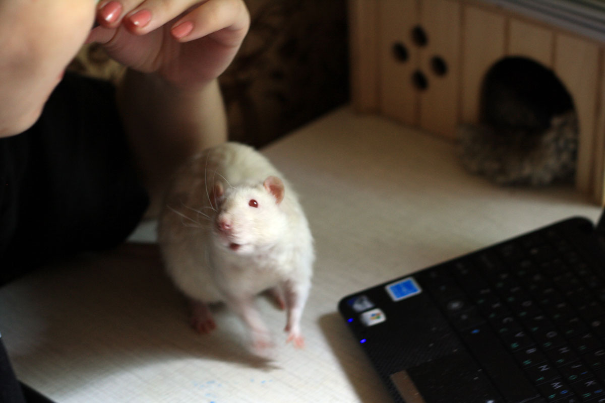

Дюк Нюкем: — Если бы не решётка, я бы показал, что я главный в обеих частях клетки!
Дюк Нюкем: — А, может, просочусь как-нибудь?

Мотя: — Я самый ласковый, я заслужил вкусняшку!

— Так не понял, где вкусняшка-то? Я заслужил!
— А чё так высоко-то?

— Кусать неудобно, так хоть оближу...

Аник: — Наконец-то додумались купить зеркалку, теперь можно светлых крысов снимать!

— Не правда ли, у меня очень резкий хвост?
А это наши старички-дикобратья... Видна разница
характеров. Убирали клетку, решили попробовать взять осмотреть — может,
постарели, успокоились...
В результате у Джона Ди чуть приступ сердечнцый не случился, так забился в
угол, а Дюк Нюкем, не обращая внимание на ослабленные ноги, плыгнул и
изобразил компостер у меня на руке.
Внизу Дюк, который остался спокойным — укусил и укусил, что такого? А Джон, также не обращая внимание на больные ноги, взлетел по стенке в гамак и там заныкался.
Потом они там вдвоём улеглись -- всё время там во время уборки прячутся.